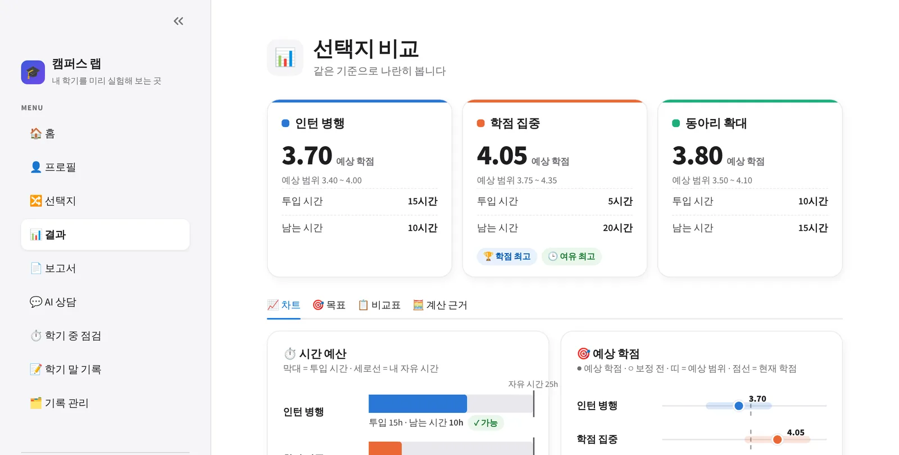

선택지 비교
인턴 · 공부 · 동아리, 최대 3개를 한 화면에.

인턴 · 공부 · 동아리, 최대 3개를 한 화면에.
장학금 기준을 지키려면 몇 시간까지 괜찮은지.
표 하나와 세 줄 정리. 파일로 내려받기.
계획과 달라졌다면, 지금 시간으로 다시 계산.
실제 학점을 남기면 다음 예측이 나에게 맞춰져요.
“인턴 10시간 하면?”처럼 물어보면 바로 계산.
앱과 같은 계산식으로 지금 바로 해 보세요.
학기 말 결과를 남기면, 다음 학기 예측이 그만큼 정확해져요.
숫자의 뼈대는 늘 같은 값이 나오는 계산식. AI는 글로 된 조건만 읽고 ±0.3 안에서 보정해요.
git clone https://github.com/injung1412-hash/ji_2994.git cd ji_2994/campus-sim pip install -r requirements.txt cp ai_config.example.ini ai_config.ini # api_key = 뒤에 본인 키 입력 python3 app.py
남는 자유 시간 = 주간 자유 시간 − 투입 시간
보정 전 예상 학점 = 현재 학점 + (자유 시간 − 공부 외 시간 − 자유 시간 × 0.6) × 0.02
+ 공부 시간 × 0.01 − (수강 학점 − 18) × 0.01 (0.0~4.5로 제한)
예상 학점 = 보정 전 예상 학점 + 내 기록 보정(±0.3) + AI 보정(±0.3)
기준값(0.6, 0.02, 18, 0.01, 공부 0.01)과 보정 폭 ±0.3은 실제 기록으로 검증하지 않은 가정입니다. AI가 실패하면 계산식 결과에 “AI 보정 없음”을 붙여 보여 줍니다.
| 모듈 | 하는 일 | 기능 |
|---|---|---|
profile | 이번 학기 상황 4가지 입력 · 검증 (학번 · 실명 · 소득은 받지 않음) | F01 |
scenario | 선택지 정리, 학기 초 기록을 CSV에 저장 | F02 · F03 |
simulation | 남는 시간 · 예상 학점 계산, AI ±0.3 보정, 실패 시 계산식 유지 | F04 · F05 · F12 |
compare | 같은 기준으로 비교, 시간 부족 경고 | F06 · F09 |
report | 표 하나 + 세 줄 정리 보고서 | F10 |
feedback | 학기 말 결과 기록, 예측 오차 계산, 다음 예측에 반영 | F07 · F08 · F11 |
counsel | 상담: 계산 결과 · 기록 기반 답변, Claude 대화 | — |
| 구분 | 항목 |
|---|---|
| 프로필 (학기 초) | term 학기 · current_gpa 현재 학점 · course_credits 수강 학점 · weekly_free_hours 자유 시간 |
| 선택지 (학기 초) | scenario_option 선택지 · scenario_hours 투입 시간 · scenario_condition 세부 조건 |
| 실제 결과 (학기 말) | actual_gpa 실제 학점 · satisfaction 만족도 1~5 · user_review 자유 평가 |